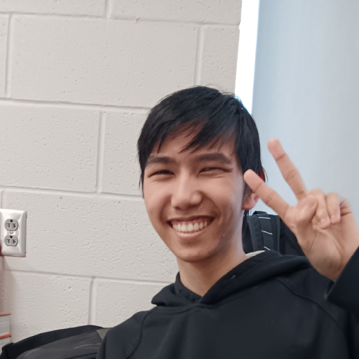

About Me
Well... since you're here, I guess you want to know about me.

Hey!
I'm Nicholas Scott-Mendez, although most people call me Nick or Nico. I'm a Digital Media Communications major at Houghton University with a minor in Music Education.
I work with video, music, graphic design, typography, photography, and plenty of other creative projects.
The Basics
Let's start with the obvious stuff.
So... what would you like someone to know about you?
I'm a pretty cool dude, I guess? Haha! I'm a Digital Media and music guy. Those two things make up a huge part of who I am and what I like to spend my time doing.
Where are you from?
I'm from Dryden, New York.
What originally got you interested in creative work?
My 11th grade TST BOCES teacher, Michael Blegen, was a huge influence on me. He taught me the tools and skills I needed to get started with digital media, and I became really passionate about it.
Music was growing alongside that too. I took concert band in high school, starting with percussion before moving over to flute in 10th grade. I'm also an organ enthusiast, and I took organ lessons at the Dryden Community Center.
Out of everything you do, what feels the most "you"?
Definitely video editing! I started using Clipchamp and CapCut when I was in 7th and 8th grade, and I've continued getting more serious about it ever since.
I'd say music comes second. A lot of my musical experience has been self-taught, which is something I'm really proud of.
What do you enjoy creating when nobody is assigning it to you?
Pipe organs on Roblox! It's a pretty small community, so I like being able to contribute to it and experiment with things that not a lot of other people are doing.
My Creative Journey
How did all of this actually start?
What's the first creative thing you remember making?
I remember making my first music on OnlineSequencer in 2021. I was HOOKED. Nobody had taught me how to make music and I didn't have a mentor, but I just had fun experimenting with it. I kept making music because I enjoyed it.
How did you get into video production?
I started editing videos around 8th grade. Once I got to TST BOCES, I became much more involved with video production and eventually joined SkillsUSA.
That's when video editing went from something I did for fun to something I really wanted to get better at.
How did you get into music?
I just had a passion for it. I started with percussion in 5th grade, then got a melodica in 8th grade, and from there I kept trying new instruments.
I tried soprano recorder and flute in 10th grade, clarinet in 11th grade, and then accordion, guitar, piccolo, and trumpet in 12th grade. I guess I went through a phase of wanting to learn every instrument I could find!
Okay, so what instruments do you actually play?
I play percussion, mallet percussion, melodica, alto recorder, soprano recorder, sopranino recorder, flute, piccolo, clarinet, guitar, organ, piano, accordion, trumpet, and oboe.
How did you get interested in graphic design and typography?
I wasn't doing my best with graphic design when I first encountered it in 11th grade at TST BOCES. I thought I didn't like it as much.
But during my senior year, I got considerably better at it, and once I started improving, I found myself enjoying it a lot more.
Why do you build things on Roblox?
Honestly, I just build them because it's a hobby of mine. There's not much more to it than that!
Is there a project you're particularly proud of?
I'm currently working on an Ithaca Murals interview project that I'm editing, and I'm particularly proud of that one. I'm working on it with Caleb Thomas, which has also given me another opportunity to work collaboratively on a video project.
School & Experience
A little bit about where I've been learning and working.
Why did you choose Digital Media Communications at Houghton?
Houghton had one of the best combinations of music and digital media programs that I found in New York and that I really liked.
I also liked that there was a good sound crew team and an organ on campus, so I could continue exploring both sides of my interests.
Why Music Education as your minor?
I really like volunteering, especially when it involves working with kids. I enjoy teaching kids some piano and helping them learn things.
It would be cool to have the opportunity to do more of that. Although, honestly, it's still not quite as good as my dream job: being a windjammer. Circus musician sounds pretty fun! :P
Was there a class or teacher that really influenced you?
Absolutely. My TST BOCES Digital Media class literally turned my whole world upside down.
It introduced me to tools, projects, and opportunities that completely changed the direction I wanted to take.
What have your jobs taught you that school couldn't?
My job at Village Taqueria taught me about food service and what it's like working under pressure.
It could be really stressful, especially during rushes. I'm not always the quickest learner or the best at thinking on my feet when things get hectic, but the experience taught me things I wouldn't have learned sitting in a classroom.
Have you worked on projects with other people?
Yes! I've worked with classmates on video projects, and I'm currently working with Caleb Thomas on the Ithaca Murals interview video.
Working with other people has helped me understand that creating something isn't always about doing everything yourself. You have to communicate, share ideas, and figure out how everyone's work fits together.
What's something you've gotten significantly better at?
Definitely video editing, graphic design, and Photoshop. I'm also trying to get better at Adobe After Effects, although that's been a bit of a challenge for me!
Outside the Résumé
Because I'm more than just school and work.
What do you do for fun?
Playing music, composing from time to time, and playing Roblox.
What kinds of music inspire you?
I've been exposed to a lot of different genres, including pop, hip-hop, classical, New Orleans jazz, marches, and orchestral music.
Do you have any weirdly specific interests?
I play too many instruments.
What's something your friends would probably say is very "Nick"?
I play too many instruments.
Where I'm Going
I don't have everything figured out. And that's okay.
Where do you hope to be a few years from now?
Hopefully I'll have a stable job, a car, and a place to live. Whether that's with a roommate or on my own, I'd like to live a comfortable life and just be happy.
What kind of creative work would you love to get paid to do?
Honestly, just having fun would be really cool. I don't completely know how to answer that one yet, but I'm still figuring it out.
What skills do you want to develop next?
I'd like to get better at answering questions on time, quick-thinking, and responding more quickly.
Sometimes I don't think ahead, so I'm working on becoming better at anticipating things and responding to situations more effectively.
What do you hope someone thinks after looking through your portfolio?
"Wow, I cannot believe I read this."
Seriously, though, I hope you get a sense of who I am, what I enjoy creating, and what I can bring to a project. Thanks for taking the time to actually read about me.